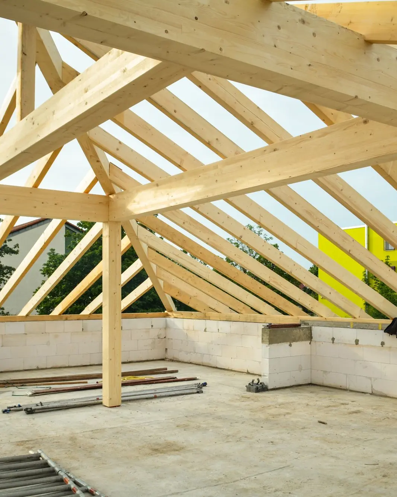
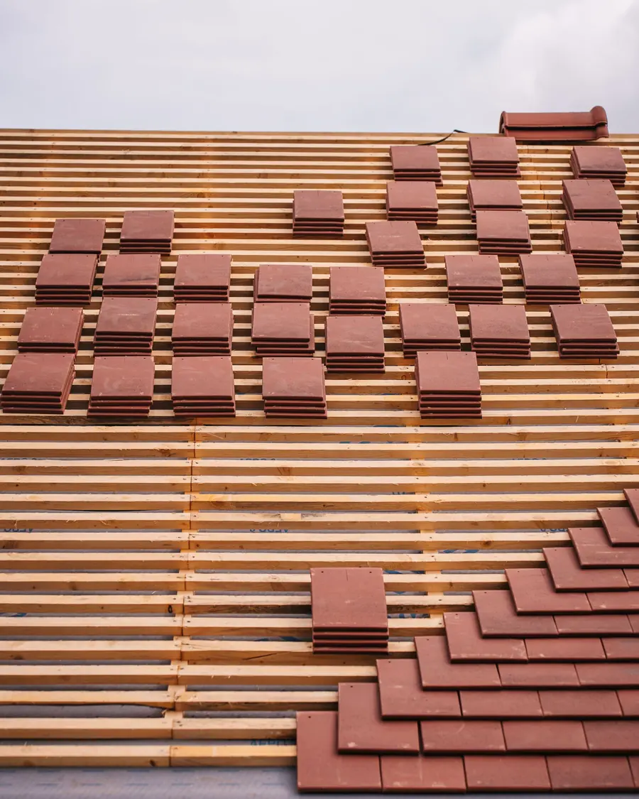
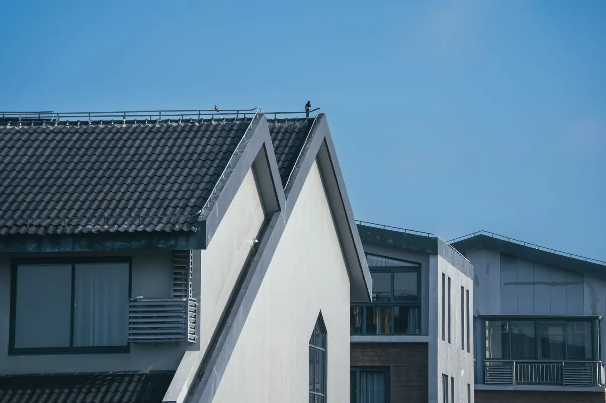

Pakalpojumi
Jumti
Jumts sargā visu māju, tāpēc konstrukciju, hidroizolāciju un segumu būvējam kā vienu sistēmu.

Būvējam jumta konstrukcijas jaunbūvēm un atjaunojam jumtus esošām ēkām: spāres, latojumu, plēves, siltināšanu un segumu.
Seguma veidu izvēlamies kopā ar jums pēc projekta, jumta slīpuma un budžeta: dakstiņi, metāla segums vai cits risinājums.
Kas ietilpst
- Spāres un jumta konstrukcija
- Latojums un pretlatojums
- Hidroizolācija un tvaika izolācija
- Jumta siltināšana
- Dakstiņu un metāla segumi
- Notekas un skārda detaļas
- Jumta logi pēc projekta


Darba gaita
Kā notiek
- 01
Apskate
Apskatām objektu vai projektu un mērām jumtu.
- 02
Tāme
Aprēķinām materiālus, darbu un termiņu.
- 03
Montāža
Būvējam konstrukciju un ieklājam segumu.
- 04
Nodošana
Pārbaudām mezglus un nododam darbu.
Jautājumi
Biežāk jautā
Vai varat nomainīt tikai jumta segumu?
Jā, ja konstrukcija ir labā stāvoklī. To novērtējam apskatē.
Kad labāk mainīt jumtu?
Sausā un siltā sezonā. Darbus plānojam tā, lai māja nepaliktu atklāta lietū.
Vai jumtu var siltināt no iekšpuses?
Bieži var. Risinājums atkarīgs no konstrukcijas, un to izvēlamies apskatē.
Citi pakalpojumi


Pastāstiet par savu objektu
Uzrakstiet, kas jābūvē, kur un kad. Atbildēsim un vienosimies par nākamo soli.